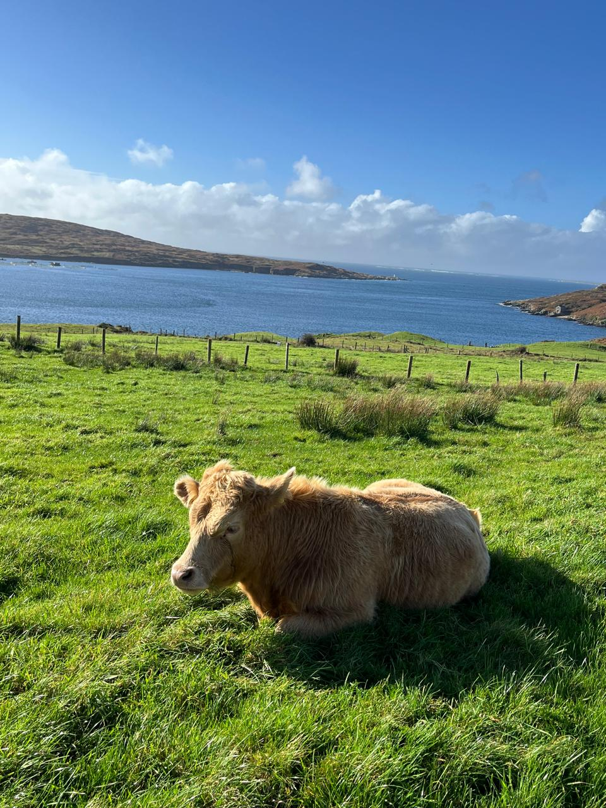
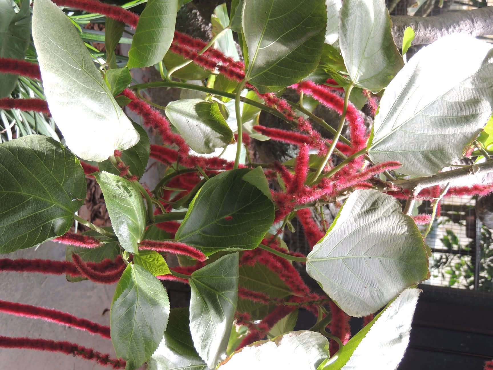
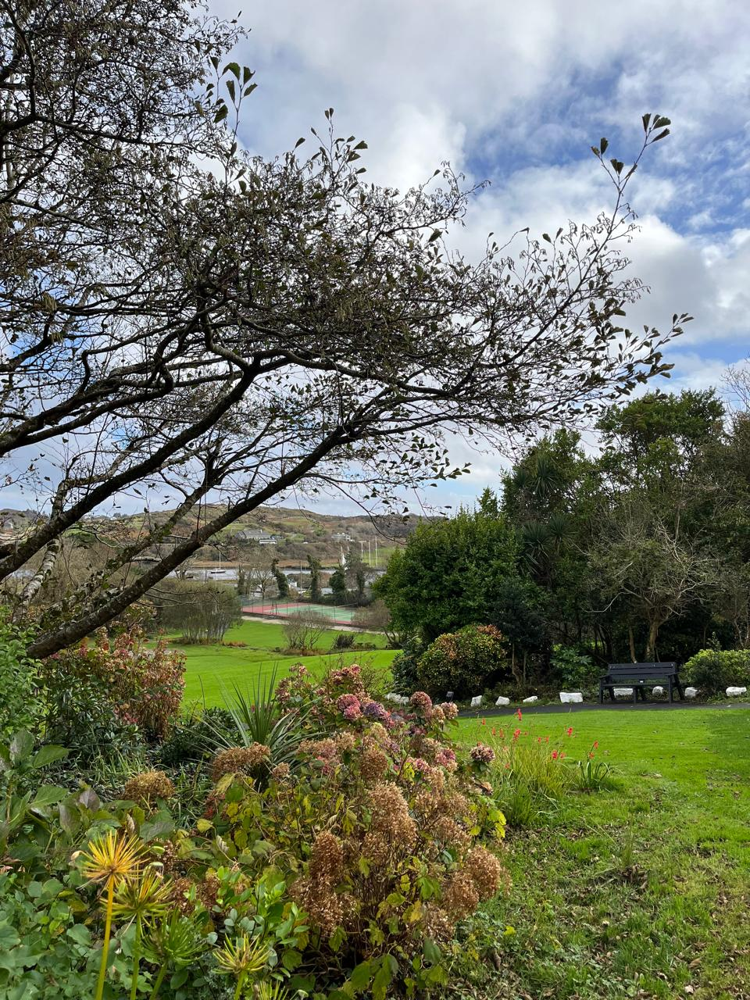
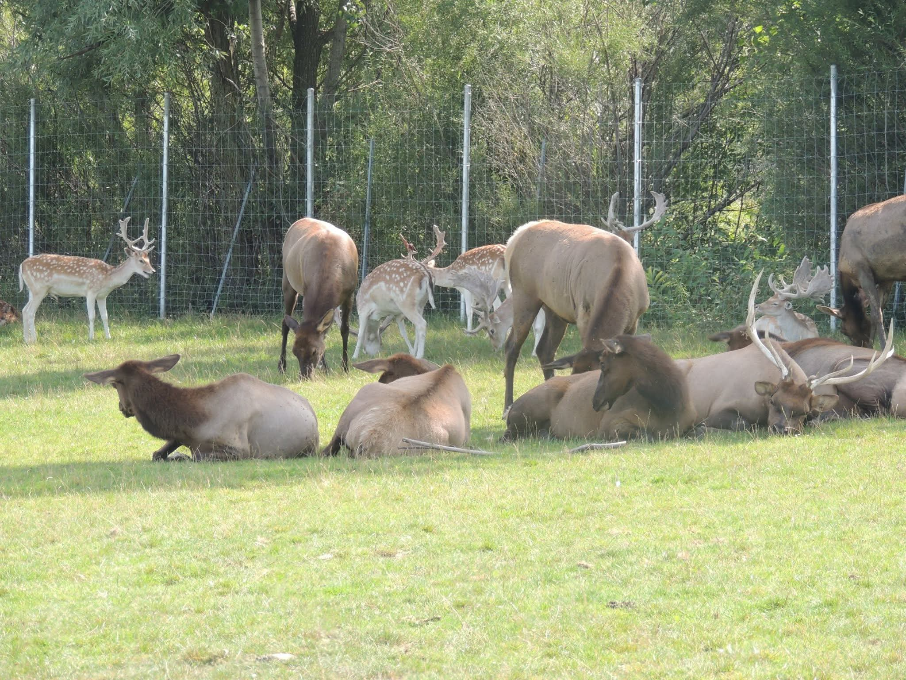
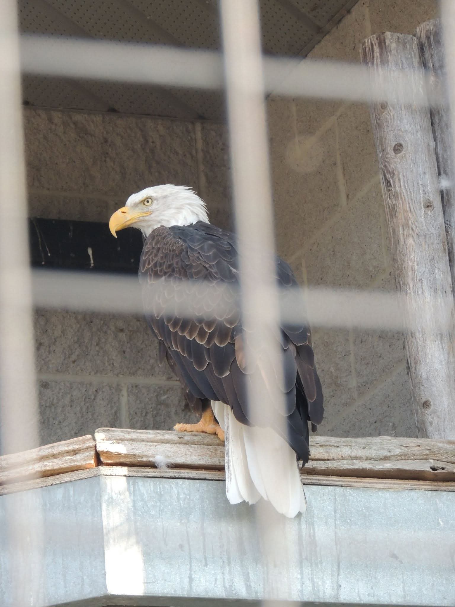
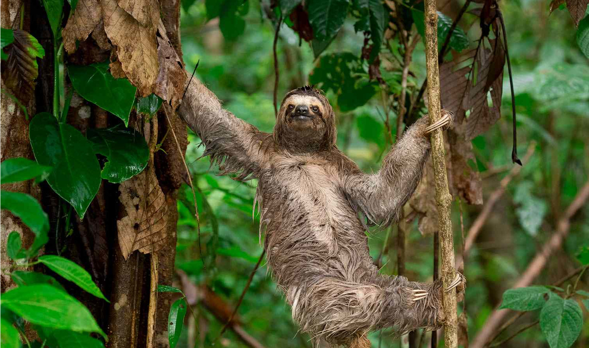

Coastal grasslands
Sun‑tolerantTough, low‑growing grasses form a dense carpet across the plains, surviving strong winds and seasonal dryness. Wildflowers appear after rains, adding bursts of colour.
Flora in Caracas Wildlife Park is adapted to sun‑baked grasslands,and waterlogged marshes. Each plant community plays a role in protecting the landscape and supporting wildlife. From wading birds to grazing mammals, Caracas Wildlife Park shelters a wide range of species. Use this guide to understand where each group is most likely to be seen along official tour routes.
While individual species vary, visitors will notice the overall patterns of vegetation that define each habitat. This page groups plants into recognizable communities, making it easier to describe and record what you see.
Use these simple groupings as a field reference when you travel with guides along the park’s designated dirt tracks.

Tough, low‑growing grasses form a dense carpet across the plains, surviving strong winds and seasonal dryness. Wildflowers appear after rains, adding bursts of colour.

Tall reeds fringe shallow water, hiding birds and amphibians while slowing currents. Their roots trap sediment and improve water clarity in the marshes.

Scrub vegetation on slopes offers shade, perches, and nesting sites. Flowers and fruits provide food for insects and birds throughout the year.
Use these simple groupings as a field reference when you travel with guides along the park’s designated dirt tracks.

Open grasslands support grazing deer, small rodents, and predators that follow their movements. Look for tracks near the edges of dirt tracks where animals cross at dawn and dusk.

Herons, egrets, and other wading birds feed in the shallows, while ducks and other waterfowl shelter in deeper pools. Binoculars are recommended for early‑morning tours.

Shrub‑covered slopes host songbirds, lizards, and small mammals that rely on the hills’ patchwork of sun and shade. Some viewpoints along tour routes overlook these micro‑habitats.